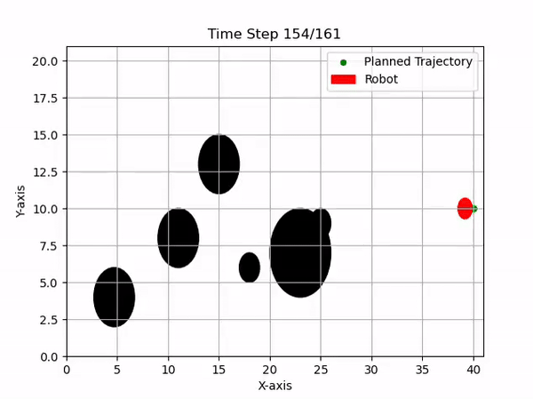

As a Software Developer specializing in infrastructure, I play a key role within the Delft Mercurians, a dedicated student team focused on advancing robotics technology for the RoboCup Small Size League. Specifically, I work on the path planning of the robots, implementing RRT* for the global planner and using Model Predictive Control (MPC) for local obstacle avoidance.
For global path planning, we implemented the RRT* algorithm. This method efficiently explores the search space and finds the optimal path by incrementally building a tree of possible paths. The RRT* ensures that the paths generated are not only feasible but also optimal in terms of the cost function defined.

Currently, the team is integrating MPC for local obstacle avoidance. Starting with a simple 2D visualization, we implement MPC to handle dynamic environments effectively.
The first step was to determine the state space model. Given that the system is holonomic, we assumed a point mass for simplicity. The state space can be expressed as:
$$ \vec{x}[k+1] = \begin{bmatrix} 1 & 0 \\ 0 & 1 \end{bmatrix} \vec{x}[k] + T_s \cdot \begin{bmatrix} 1 & 0 \\ 0 & 1 \end{bmatrix} \vec{u}[k], $$where state $\vec{x}$ is the position in the $x$ and $y$ directions, $\begin{bmatrix} x & y \end{bmatrix}^\intercal $, $\vec{u}$ are the velocity inputs sent to the robot, $\begin{bmatrix} v_x & v_y \end{bmatrix}^\intercal$, and $T_s$ is the sampling time.
With the state space defined, the cost function and constraints are formulated as follows:
$$ J = \sum_{k=0}^{N-1} \left[ \|x_k - r_k\|_{Q}^2 + \|u_k\|_{R}^2 \right] + \|x_N - r_N\|_{Q}^2, $$where $r_k$ and $r_N$ are the desired positions, and $R$ and $Q$ are weighting matrices determining the priority of tracking error vs. control input.
The optimization problem is then defined as:
$$ \begin{aligned} \min_{u_k} \quad & \sum_{k=0}^{N-1} \left[ \|x_k - r_k\|_{Q}^2 + \|u_k\|_{R}^2 \right] + \|x_N - r_N\|_{Q}^2 \\ \text{subject to} \quad & \left\| p_{r} - p_{o} \right\|_2 \geq r_r + r_o, \\ & \vec{v} \leq \vec{v}_{lim} \end{aligned} $$Obstacle avoidance is achieved by adding constraints to the cost function to prevent the robot from coming into contact with obstacles. The constraint is defined as:
$$ \left\| p_{r} - p_{o} \right\|_2 \geq r_r + r_o, $$where $p_r$ and $p_o$ are the centers of the robot and obstacle, respectively, and $r_r$ and $r_o$ are their radii. Additionally, velocity constraints ensure the calculated trajectory is physically achievable.
The full optimization problem is solved using the casADi solver, which is capable of handling dynamic and static environments effectively. This approach was inspired by the RoboDragons' 2022 implementation.
This project demonstrates the implementation of sophisticated path planning algorithms in the RoboCup Small Size League. By combining global and local planners, the Delft Mercurians' robots can navigate complex environments efficiently and safely.